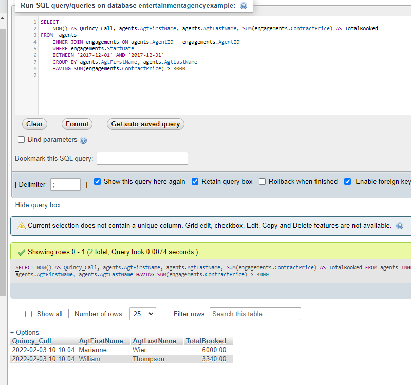

SQL Fundamentals
SDEV 1041
Overview:
This class has students learn how to navigate a database using SQL commands, particularly how to link related tables and display the return in a readable and easy to understand format. SQL helps navigate databases in a more flexible manner that allows users to compile information that they need.
Examples of Course Work:
Lessons consisted of being given a request, translating the request into a readable format, and executing the command
Course reflection:
This was a relatively simple concept, and after getting adjusted to it. It was fairly easy to execute. Operating a SQL command is really just translating your request into a language that the software can understand.